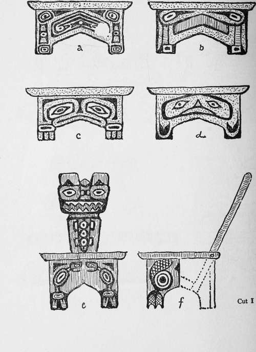
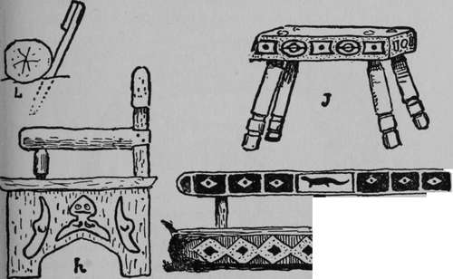
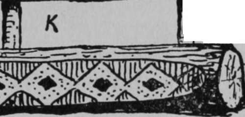
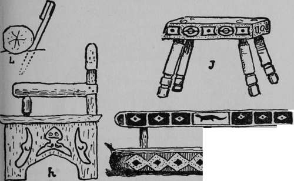
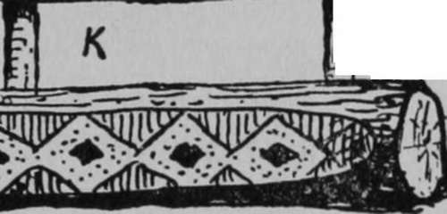
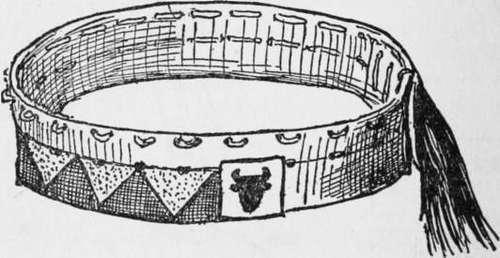

Hairy Wolf's Teepef
Description
This section is from the book "The Book Of Woodcraft", by Ernest Thompson Seton. Also available from Amazon: The Book of Woodcraft.
Hairy Wolf's Teepef
Marked with a peace pipe in cut p. 444 is Hairy-Wolf's teepee. I came across this on the Upper Missouri in 1897.
It was the most brilliant affair I ever saw on the Plains, for on the bright red ground of the canvas were his totems and medicine, in yellow, blue, green, and black. The day I sketched it, a company of United States soldiers under orders had forcibly taken away his two children "to send them to school, according to law"; so Hairy-Wolf was going off at once, without pitching his tent. His little daughter, "The Fawn," looked at me with fear, thinking I was coming to drag her off to school. I coaxed her, then gave her a quarter. She smiled, because she knew it would buy sweetmeats.
Chipewyan teepees with separate smoke flap.
Then I said: "Little Fawn, run and tell your father that I am his friend, and I want to see his great red teepee".
No. 1. No. 2. No. 3.
No. 7. No. 8 No. 9. Various tepees (smoke poles left out).
"The Fawn" came back and said, "My father hates you".
"Tell your mother that I will pay if she will put up the teepee".
"The Fawn" went to her mother, and improving my offer, told her that "that white man will give much money to see the red teepee up".
The squaw looked out. I held up a dollar and got only a sour look, but another squaw appeared. After some haggling they agreed to put up the teepee for $3. The poles were already standing. They unrolled the great cloth and deftly put it up in less than 20 minutes, but did not try to put down the anchor rope, as the ground was too hard to drive a stake into.
My sketch was half finished when the elder woman called the younger and pointed westward. They chattered together a moment and then proceeded to take down the teepee. I objected. They pointed angrily toward the west and went on. I protested that I had paid for the right to make the sketch; but in spite of me the younger squaw scrambled like a monkey up the front pole, drew the lacing-pins, and the teepee was down and rolled up in ten minutes.
I could not understand the pointing to the west, but five minutes after the teepee was down a dark spot appeared; this became a cloud and in a short time we were in the midst of a wind-storm that threw down all teepees that were without the anchor rope, and certainly the red teepee would have been one of those to suffer but for the sight and foresight of the old Indian woman.
Art
All students of the Indian art are satisfied that in this we find the beginnings of something that may develop into a great and original school of decoration. Not having learned their traditions, conventions, and inner impulse, we believe that at present we shall do best by preserving and closely copying the best of the truly native productions.
Indian SEATS.
Most boys are glad to learn of something they can make to sell for money. So I shall give you some designs for household furniture that every scout can make - they are not mission, but quite as serviceable and much more of a novelty: I mean real Indian furniture. It is very safe to say that everything you need in camp, from hair-combs to beds, blankets, and signboards, was made by the Indian in a more original way than any of us can expect to reach without help.
Very few of the Plains Indians made furniture, as we understand it, but those on the West Coast did. We may follow many of their designs exactly.
One of the simplest and most useful things is the low stool. Many of these are shown in cuts I and II. These designs are closely copied after West Coast Indian work, though originally used to decorate boxes.
A chief's chair (e, f, g, h) is a fine thing to make for a Lodge-room or for sale, but in camp we seldom see anything so elaborate. Indeed, few fellows feel like doing cabinet work when out under the trees. They are not there for that purpose. In several cases we have made a fine throne for the chief out of rough, field stone; i in.
Therefore, in decorating teepees, etc., we use only literal copies of the good Indian work.
 
cut II.
cut II is an example of this. The seat should be not more than two feet from the ground, and even at that height should have a footstool.
The stool J is of white man's construction, but Indian decoration, in red, black and white.
The log seat, or Council seat, K, is a useful thing that each Band should make in the Council ring. It is simply a log flattened on top, on the front side. It has a board back, supported on two or three stakes, as shown in L. This is designed for the "Otters".
Each brave needs a head-band. This holds his feathers as they are won and his scalp if he wears one is fastened to it behind. It consists of a strip of soft leather, long enough to go around the head and overlap by two inches; it is fastened at the rear, with a lace through the four holes, like the lace of machine belting. A bead pattern ornaments the front and it may be finished at each side in some broader design. It is the foundation for the warbonnet and has places for twenty-four feathers (two eagle tails). See Warbonnet later.
Head Band
The feathers are made of white quill feathers, the tip dyed dark brown or black; a leather loop is lashed to the quill end of each to fasten it on to the head-band. Each feather stands for an exploit and is awarded by the Council. An oval of paper is glued on near the high end. This bears a symbol of the feat it commemorates. If it was Grand Coup or High Honor, the feather has a tuft of red horsehair lashed on the top.
Continue to:
Tags
bookdome.com, books, online, free, old, antique, new, read, browse, download